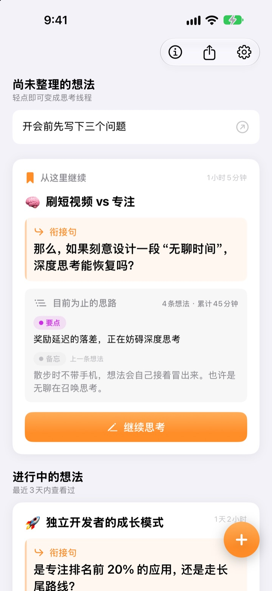
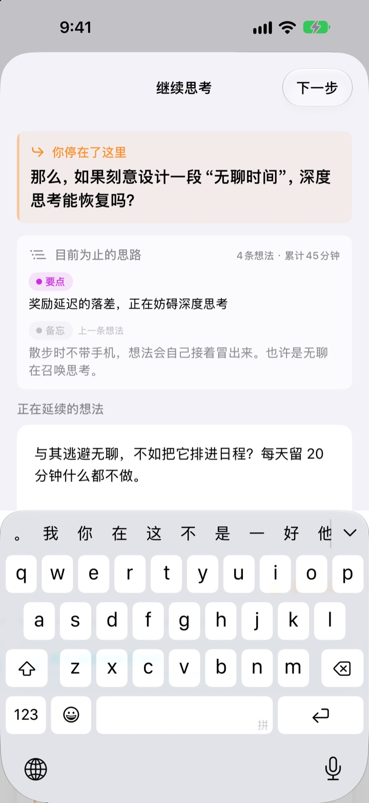
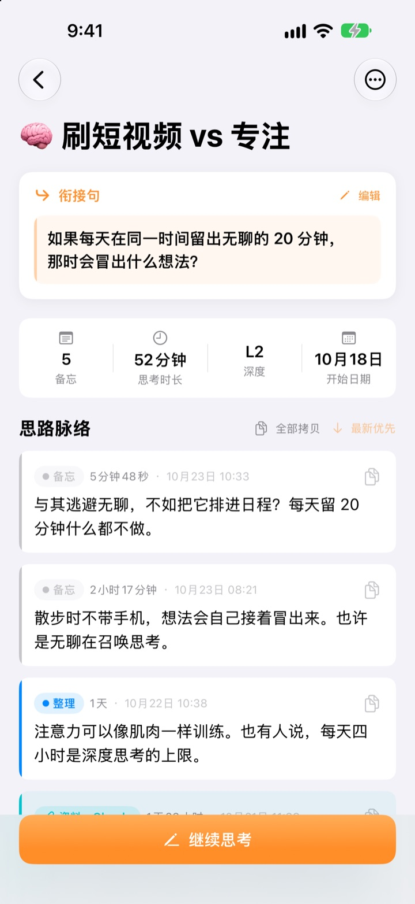
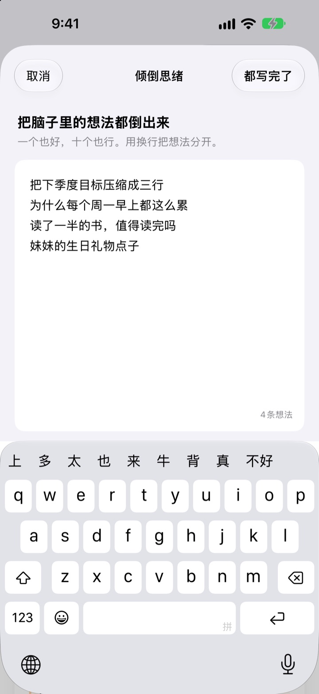

昨天没想完的念头，
今天从原处接着想
停下来时，留一句接下来要想的话。下次打开，这句话就在最上面等你。
所有功能免费。无需账号，全部只存在你的设备上。

亲手留一句衔接句
写下一条想法，再留下下次要接着想的那句话。流程和 App 里完全一样。
我上次想到哪儿了？
翻开几天前的笔记，只剩几行像结论的东西，接下来打算想什么却完全记不起来，只好从头再想一遍。ThinkFlow 让你在停下时留下下一个问题，一打开就能从那个问题接着想。
衔接句在最上面等你
结束思考时，留下一句下次要接着想的问题。再次打开时，这句话、迄今为止的要点和上一条想法都在同一张卡片上，不用再回想自己想到了哪里。
主屏幕小组件也会显示衔接句；思考期间，锁定屏幕和灵动岛会显示计时。

从备忘到要点
把记下的想法按备忘、整理、要点、总结四个层级逐步提炼，一眼就能看出想法成熟到了哪一步。
搜索或提问得到的内容作为资料附上，不会和自己的想法混在一起。

先把脑子清空
把想到的一行一行全部写下，再挑出现在最想深入的那一条，它就会成为一条思考线。其余的留在首页，轻点一下就能接着想。
超过三天没碰的想法会归到“待唤醒的想法”里。

三步开始
- 1
倾倒思绪
一行一条写下来，挑出值得深入的那一条。
- 2
接着想
每冒出一个新想法就单独添加，之后整理更轻松。
- 3
留下衔接句再关闭
下次打开，就从这句话开始。
整理层级
- 备忘
- 原始想法
- 整理
- 已整理一次
- 要点
- 只留要点
- 总结
- 最终总结
轻点想法旁边的层级标签即可更改。要点和总结会在下次打开时优先显示在卡片上。
衔接句在最上面等你
一定要写衔接句吗？
只要写了内容，就需要。“继续思考”页面要留下衔接句才能关闭；什么都没写的话可以直接关掉。诀窍是趁还有话可说时停下，而不是卡住了才停。
“待唤醒的想法”是什么？
超过三天没打开的思考线会单独归到首页的“待唤醒的想法”里。差点忘掉的想法，也能从衔接句接着想下去。
想反馈问题或提建议怎么办？
可以在 App 设置里用“发送反馈”直接发送，也可以写信到下方邮箱，或在 GitHub（github.com/M1zz/ThinkFlow/issues）留言。什么想法都欢迎。
真的全部免费吗？
是的，所有功能都免费，没有广告，也不用注册。设置里的“支持开发者”完全自愿，支持与否功能都一样。
有问题或建议，欢迎写信到 leeo@kakao.com。